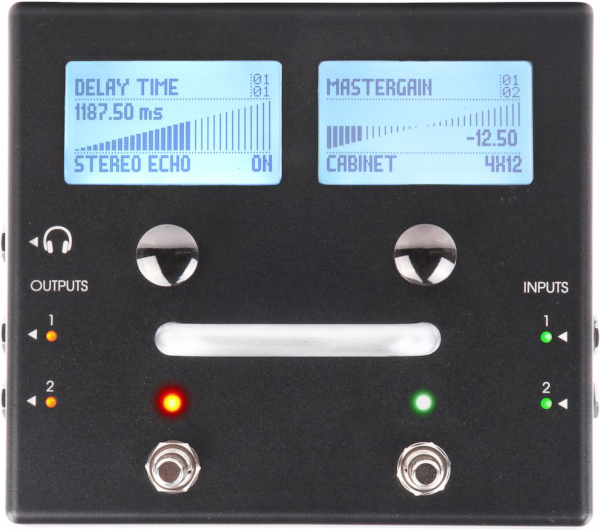

LMP Asks #22: An interview with Gianfranco Ceccolini
This time we talk to Gianfranco Ceccolini, the brains behind multi effects pedal, MOD, which runs on Linux and other FLOSS software.
Hi Gianfranco, thank you for taking the time to do this interview. Where do you live, and what do you do for a living?
I currently live in Berlin, Germany but I am originally from São Paulo, Brazil.
I am the founder and current CEO of MOD Devices.

Can you tell us a bit about the history of the MOD project?
I’ve always been into effects pedals (and computers) but, as it happens with many other guitar players, having all effects you desire is not a viable option, both for physical as financial limitations. Digital multi effects never satisfied me neither due to the fact that the built in collection always has some effects you dislike and lacks others you’d like having but cannot simply 'insert' into the device.
While still at the Engineering school, in the early 2000s, I already considered with some friends the application of the computer as a processing unit to substitute the effect pedals I had. A sort of 'super multi effects'.
The idea cooked in my mind for some time.
I concluded my graduation and started working as an engineer at a big oil company. After 3 years it got quite clear that corporative jobs are not my cup of tea. I decided on the pursuit of my own ideas and the 'super multi effects' unit seemed to be the way to go.
I started searching for people to follow this path with me and paired up with two electrical engineers that were my coleagues at the Engineering School who had opened their own company. While still at my job I bought a development kit form Analog Devices and did some preliminary tests to verify if the idea was viable at all.
In 2009 we applied for a government grant on innovative projects and won it. In 2010 I quit my job and started working on what would become the MOD.

Still in 2010, halfway through the roadmap we applied for, we came to the conclusion that the original idea would not be a good one. We then shifted for a Linux based unit and worked for 18 months until we had some prototypes to show around. These prototypes, albeit very rudimentary in lots of aspects, already boasted most of the functionalities we have today: remote GUI, free patching and routing of internal audio connections and pedalbaord without the computer.
In 2012 we teamed up with Hacklab - a web-based solutions company – and started working on the HTML graphical interface, the MOD Cloud – what today is the Plugins Store and the shared Pedalboard feed – and simplified the device. All this resulted in the MOD Quadra, which was released as a pilot in September 2013.
Although far from being a commercial success, the MOD Quadra helped us to get inumerous feedbacks and insights that resulted in the Kickstater campaign for the MOD Duo that was funded in October 2014.
The original plan was to fulfill the campaign in San Francisco but, due to a number of reasons, we shifted plans to Berlin and have been here since January 2015.
In February 2016 we started shipping the very first units of the MOD Duo.
It has been quite a long ride ;-)
Can you tell us a bit about any other projects you are involved in?
My family. I am married to a lovely wife and we have two great kids. All the time I am not doing MOD related stuff is spent with them.
What is your musical background?
I’ve have always been into music. My parents are from the Beatles generation and music has always been a part of our life. Brazil is a very musical country and thus the music offerings – both national as international – have always been great.
When people ask me what kind of music I like I answer “the good one”. The genre depends on the occasion.
I play the guitar since 1989. I did not go into formal music education but studied with a variety of teachers.
I love both electric and acoustic guitars. I tried to mess with other instruments – bass, cavaquinho and drums – but guitars are really my thing.
I played in bands with friends since the early beginning and don’t see much of a point in playing alone. Since I came to Berlin I’ve tried some sessions here and there but the time is quite scarce. I figure that my next musical project will need to involve one – or both – of my kids ;-)
What is your typical workflow when making music?
I am a sort of a computer nerd but, when I play the guitar, I am somehow “old school” and what I really like to do is plug the guitar to the pedal(s) and amp and simply play.
I find it very annoying to be fiddling with the equipment while I play and for me the computer is very undesired while playing with a band.
When recording, I use Ardour or Audacity, depending on what needs to be accomplished.
Tell us a bit about your hardware set up
It is as minimal as possible. Today when I play I use only my guitar and the MOD Duo. Due to it’s MIDI capabilities I’ve recently purchased a guitar with the Fishman Triple Play MIDI system and I have a lot of fun with the possibilities that MIDI has brought.
My pedalboards inside the Duo range from very classic guitar sounds to crazy synths (and a lot of delays).
I like to play with loopers but I wish I could use them better then I do.
For recording I use a Mackie Onyx BlackJack USB.
What is your history with Linux?
I first tried Red Hat Linux in 1998 but did not actually get to use it. In 2002 I had a second, not very successful, attempt with a Brazillian distribution called Conectiva and also with Debian. In 2003, after graduating, I moved temporarily to London and abandoned the Desktop format in favor of a Notebook. During this time I shifted from Windows to Mac.
In 2006, back in Brazil, I “settled down” again and assembled a home desktop. At this point my choice was to run a Linux box with Ubuntu. This was the time in which Linux really struck me. When I first installed Ubuntu Studio I went “Wow! A complete multimedia station out of the box. And free”. Then came Puredyne, with the portable Live USB approach and that rock solid 2.6 RT Kernel. I could have it running in my laptop, fire up Guitarix, Rakarrack and JackRack and run it as my guitar effects box.
Most of the techlogies I incorporated into the MOD came from these Linux experiences, from the JACK audio server to the remote GUI that I envisioned because of using webmin and wordpress.
Nowadays I use a Macbook with triple boot, mostly running MacOS. Battery life and a proper implementation of the touchpad still make the MacOS my preferred OS for laptops.
Pragmatically thinking there is no perfect option. Both for personal, as well as for work reasons, I find myself needing one different OS for each different task.
Why do you feel open source is important, and what for you is the most important aspect of Linux audio?
For me the importance of open source is related to time, which is our most valuable asset. If there was no open source, code would have to be infinitetly re-writen from scratch and that would be an enormous waste of time.
What do you feel is currently lacking in Linux audio?
Usability and lack of unity. Developers add so many functions to their software to the point that only developers are able to properly use them. Every open source software should have a “switch to simple mode” control. In this mode users would be presented no more than three or four buttons to execute only the core functions of the software.
The lack of unity is quite delicate to discuss as it involves ego, freewill and so many other roots of motivations, but I must say that I find things like the concurrent development of JACK1 and JACK2 to be quite difficult to accept.
What is your favourite FLOSS plugin?
That’s a difficult one for me. We currently have 187 carefully selected FLOSS plugins at the Plugin Store and I really like them all.
Probably the CAPS C* Scape is my old time favorite, both for its good sounding as for its uniqueness.
Are there any FLOSS projects that you are excited about at the moment?
There is a toolkit in Guitarix called “ampsim” that generates a plugin code from an electric schematic. How cool is that? I love this kind of solutions.
What changes, if any, would you like to see within the Linux Audio community?
A single audio infrastructure that would substitute ALSA, PulseAudio and JACK.
What advise would you give to a new Linux Audio user?
Go for the KXStudio or AV Linux distros if this is your first try and you don’t want to waste time.
If you decide to stick to it I suggest Linux Mint plus the KX Studio PPAs.